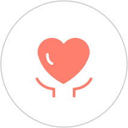

我有医生
我有医生是上海览海在线健康管理有限公司推出的一款移动医疗服务软件。通过视频咨询或电话咨询的全新沟通方式，为家庭提供在线问诊、健康档案、慢病管理等医疗健康服务。
如何使用我有医生
选择医生
•
首页选择医生
•
值班室更多备选医生
呼叫医生
•
进入医生详情
•
选择视频或电话问诊方式
•
填写问诊资料
•
开始问诊

服务评价
•
问诊完成
•
进入我的问诊记录详情
•
对本次问诊评价
服务优势
我有医生
立即呼叫
耐心沟通服务
人性化付费方式
诊后随时关注病情
在线完成复诊
无交通费
医院现状
平均等待2小时
问诊时间有限
付费方式有限
不会主动关注病情
复诊需再次前往
20-100元交通费
服务卡可享用哪些服务
•
健康保健服务
解决家庭成员日常疾病预防、术后康复问题、季节性的预防与治疗、常见老年疾病的预防和治疗等。
•
育儿保健服务
解决宝宝遇到的各种常见病、多发症，同时对于宝宝的生长发育、心理发育等幼儿问题给与科学的建议和指导。
•
心理咨询服务
解决青少年焦虑、白领职场压力、产后妈妈抑郁等关系处理等心理困境，共同找出心理问题的原因，寻求摆脱困境的条件和对策，缓解压力和焦虑情绪，恢复身体健康。
•
高血压服务
指导通过非药物方式如食疗、运动、改善生活方式等控制血压；指导长期用药患者，科学用药，实时监测血压，预防心梗、中风等并发症。
•
糖尿病服务
指导患者日常生活注意事项控制血糖；指导长期用药患者科学用药，实时监测，预防急性并发症和慢性并发症。
•
鼻炎、过敏服务
解决痘痘、粉刺、痤疮等皮肤问题；过敏引起的皮肤问题；长期患有鼻炎的患者，进行用药及生活方式的的指导。
•
妇科服务
解决各种妇科炎症的问题，指导生活方式及用药。
•
孕产期服务
解决备孕、孕期及产后遇到的各种问题。